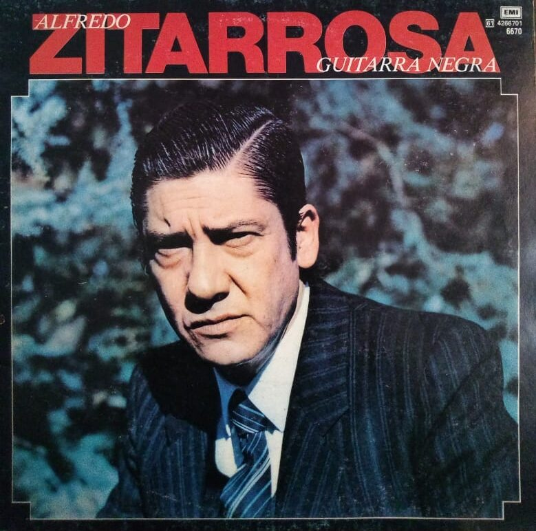

Galería Multimedia

Guitarra negra
Foto de 1966
Foto en su estudio
Momento de creación
Prensa escrita 1967
Prensa escrita 1984
Videos y Música
P'al que se va - Estudio
A José Artigas
P'al que se va - Vivo